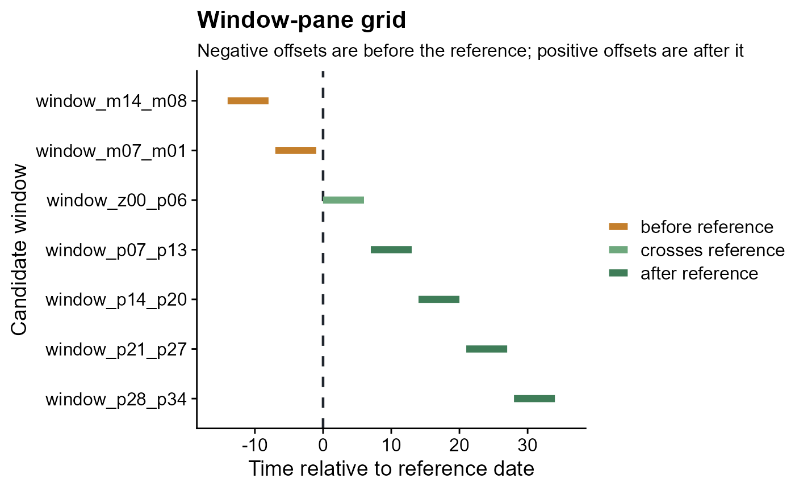
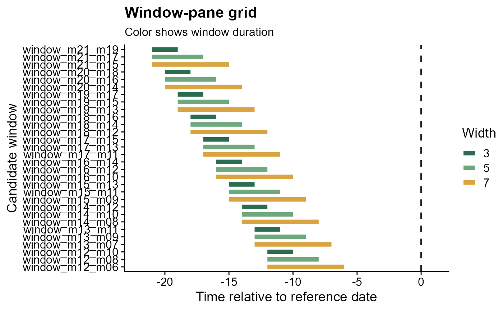

Plot a Window-Pane Grid
plot_window_pane.RdVisualizes candidate relative-time windows created by make_windows(). The
vertical dashed line marks the reference date. Windows fully before the
reference, fully after the reference, and crossing the reference are colored
separately so the timing logic is visible.
Usage
plot_window_pane(
windows,
max_windows = 30,
color_by = c("timing", "width", "none"),
title = "Window-pane grid",
subtitle = NULL,
xlab = "Time relative to reference date",
ylab = "Candidate window",
reference_label = "Reference date"
)Arguments
- windows
A data frame created by
make_windows().- max_windows
Maximum number of windows to display. Use
Infto show all rows.- color_by
Character value controlling segment color. Use
"timing"to color windows by position relative to the reference date,"width"to color by window duration, or"none"for one color.- title
Plot title.
- subtitle
Plot subtitle. If
NULL, a subtitle is generated from the selectedcolor_byvalue.- xlab
X-axis label.
- ylab
Y-axis label.
- reference_label
Label used for the vertical line at relative-time 0.
Examples
windows <- make_windows(min_offset = -14, max_offset = 35, width = 7, slide_by = 7)
plot_window_pane(windows)

variable_windows <- make_windows(min_offset = -21, max_offset = -1, width = c(3, 5, 7))
plot_window_pane(variable_windows, color_by = "width")
